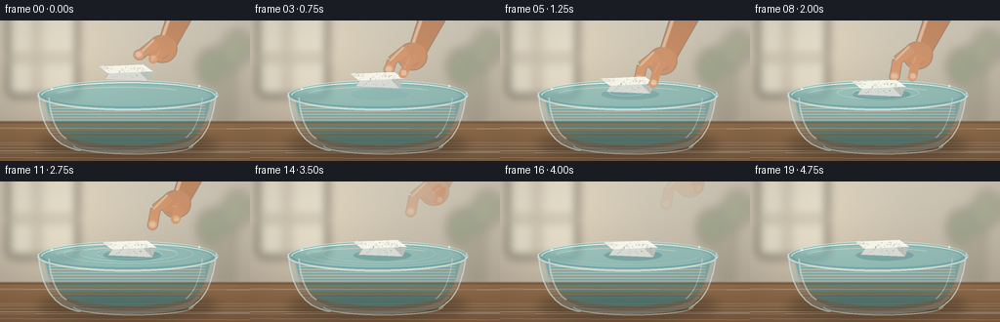
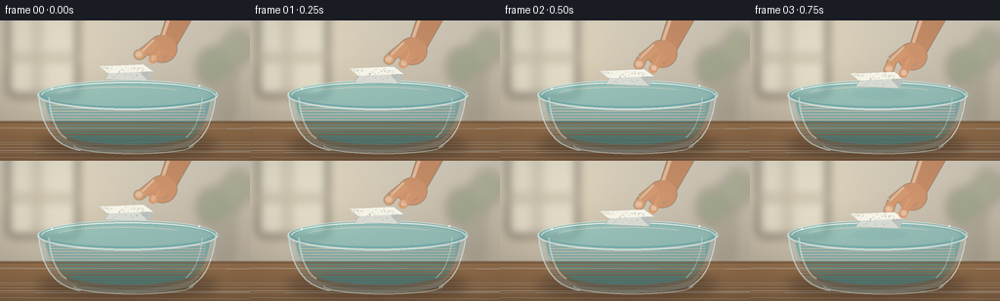
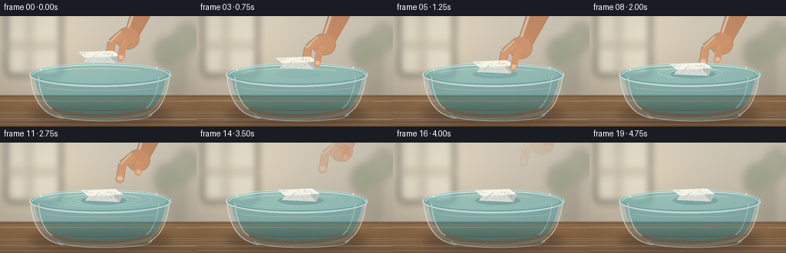

CODING AGENTS AS PIXEL WORLD MODELS
traex/GPT-5.6-Sol · mechanics_0014
点击播放 · 原生 RGB 像素
逐轮保存的候选
回放视频、检查图与代码变化。
每份候选均可单独播放。实际图片检查记录在下方工具轨迹中。
候选 01播放与检查图
点击播放 · 原生 RGB 像素

展开代码变化
--- 上一保存版本
+++ 本次保存版本
@@ -0,0 +1,267 @@
+from pathlib import Path
+import math
+import numpy as np
+from PIL import Image, ImageDraw, ImageFilter
+import artifact_io
+
+# Procedural, softly lit close-up of a hand placing a rough styrofoam block on water.
+W, H, N, FPS = 256, 144, 20, 4.0
+S = 3
+w, h = W*S, H*S
+rng = np.random.default_rng(1407)
+
+def sc(v): return int(round(v*S))
+def box(b): return tuple(sc(v) for v in b)
+def pts(p): return [(sc(x), sc(y)) for x,y in p]
+
+def cubic(p0,p1,p2,p3,n=20):
+ out=[]
+ for u in np.linspace(0,1,n):
+ q=(1-u)**3*np.array(p0)+3*(1-u)**2*u*np.array(p1)+3*(1-u)*u*u*np.array(p2)+u**3*np.array(p3)
+ out.append(tuple(q))
+ return out
+
+def alpha_layer(): return Image.new('RGBA',(w,h),(0,0,0,0))
+
+def make_background():
+ yy,xx=np.mgrid[0:h,0:w]
+ y=yy/(h-1)
+ x=xx/(w-1)
+ top=np.array([215,207,190.],float)
+ lower=np.array([174,163,146.],float)
+ arr=top[None,None,:]*(1-y[:,:,None])+lower[None,None,:]*y[:,:,None]
+ # warm sunlight from the window at left
+ glow=np.exp(-((x-.20)**2/.07+(y-.25)**2/.18))[:,:,None]
+ arr += glow*np.array([22,18,10])[None,None,:]
+ noise=rng.normal(0,0.75,(h,w,1))
+ arr=np.clip(arr+noise,0,255).astype(np.uint8)
+ bg=Image.fromarray(arr,'RGB').convert('RGBA')
+ far=alpha_layer(); d=ImageDraw.Draw(far,'RGBA')
+ # defocused window and mullions
+ d.rounded_rectangle(box((8,-10,79,77)),radius=sc(6),fill=(235,230,211,165),outline=(245,242,229,190),width=sc(2))
+ d.rectangle(box((36,-6,40,75)),fill=(142,136,124,65))
+ d.rectangle(box((9,36,78,40)),fill=(142,136,124,55))
+ # distant bottle and plant shapes
+ d.rounded_rectangle(box((219,34,241,105)),radius=sc(8),fill=(91,91,72,45))
+ d.ellipse(box((220,21,246,55)),fill=(65,99,61,65))
+ d.ellipse(box((202,29,230,66)),fill=(76,113,69,75))
+ d.ellipse(box((230,9,256,45)),fill=(89,121,70,62))
+ far=far.filter(ImageFilter.GaussianBlur(sc(5.0)))
+ bg=Image.alpha_composite(bg,far)
+ # wood counter, with a soft seam and subtle grain
+ table=alpha_layer(); d=ImageDraw.Draw(table,'RGBA')
+ d.rectangle(box((0,103,256,144)),fill=(126,94,65,255))
+ for y0 in range(106,145):
+ q=(y0-103)/41
+ col=(148-int(23*q),111-int(18*q),76-int(12*q),255)
+ d.line(pts([(0,y0),(256,y0)]),fill=col,width=sc(1))
+ for k in range(11):
+ y0=108+rng.uniform(0,34)
+ d.line(pts([(-10,y0),(266,y0+rng.uniform(-1.3,1.3))]),fill=(83,57,38,int(rng.integers(8,20))),width=sc(rng.uniform(.2,.6)))
+ d.line(pts([(0,103),(256,103)]),fill=(91,70,54,95),width=sc(1))
+ return Image.alpha_composite(bg,table)
+
+BACKGROUND=make_background()
+
+# fixed texture positions for the foam, preserving visual identity across frames
+foam_dots=[]
+for _ in range(48):
+ foam_dots.append((rng.uniform(0.05,.95), rng.uniform(.08,.90), rng.uniform(.35,1.15), rng.uniform(0,1)))
+
+def draw_bowl(img, i):
+ # grounded cast shadow
+ sh=alpha_layer(); d=ImageDraw.Draw(sh,'RGBA')
+ d.ellipse(box((38,116,223,140)),fill=(43,28,18,95))
+ sh=sh.filter(ImageFilter.GaussianBlur(sc(6)))
+ img=Image.alpha_composite(img,sh)
+
+ back=alpha_layer(); d=ImageDraw.Draw(back,'RGBA')
+ # translucent glass body silhouette with curved sides
+ outer=(cubic((38,74),(40,100),(49,126),(81,133),18)+
+ cubic((81,133),(112,137),(170,137),(193,129),18)+
+ cubic((193,129),(214,114),(219,91),(221,74),18)+
+ cubic((221,74),(185,59),(73,58),(38,74),40))
+ d.polygon(pts(outer),fill=(171,210,216,60))
+ # bowl glass lower cool shading
+ lower=(cubic((45,79),(46,99),(54,119),(82,128),16)+
+ cubic((82,128),(117,134),(173,133),(196,122),16)+
+ cubic((196,122),(210,110),(214,92),(215,79),16)+[(45,79)])
+ d.polygon(pts(lower),fill=(103,180,190,44))
+ # water volume behind the front glass
+ water=(cubic((46,75),(47,94),(53,112),(76,122),16)+
+ cubic((76,122),(112,130),(177,129),(201,117),18)+
+ cubic((201,117),(212,102),(215,86),(216,75),14)+[(46,75)])
+ d.polygon(pts(water),fill=(55,157,171,115))
+ # depth bands under surface
+ for yy in range(78,120,3):
+ a=max(4,25-int((yy-78)*.45))
+ d.line(pts([(51,yy),(210,yy)]),fill=(181,235,232,a),width=sc(1))
+ # top surface with rear shadow and central illumination
+ d.ellipse(box((39,61,223,91)),fill=(81,179,187,138),outline=(217,239,235,135),width=sc(1))
+ d.ellipse(box((46,66,216,87)),fill=(89,190,196,115))
+ d.arc(box((42,63,220,90)),180,360,fill=(237,249,244,170),width=sc(1.2))
+ # subtle moving specular streak on water
+ shift=1.5*math.sin(i*.34)
+ d.arc(box((57+shift,68,196+shift,84)),193,322,fill=(219,249,244,80),width=sc(.7))
+ img=Image.alpha_composite(img,back)
+ return img
+
+def draw_hand_base(img, foam_y, i):
+ # Descending hand follows the foam, then withdraws upward-right after release.
+ if i <= 6:
+ ox,oy=0,foam_y-61
+ a=255
+ else:
+ q=i-6
+ ox,oy=2.8*q,-4.2*q
+ a=max(0,255-int(max(0,q-5)*42))
+ if a<=0: return img,(ox,oy,a)
+ lay=alpha_layer(); d=ImageDraw.Draw(lay,'RGBA')
+ A=lambda c: (c[0],c[1],c[2],int(c[3]*a/255))
+ # forearm taper and hand mass
+ arm=[(178+ox,-13+oy),(207+ox,-5+oy),(177+ox,47+oy),(158+ox,50+oy)]
+ d.polygon(pts(arm),fill=A((199,142,104,255)))
+ d.line(pts([(180+ox,-8+oy),(163+ox,42+oy)]),fill=A((240,184,143,150)),width=sc(3))
+ d.ellipse(box((151+ox,30+oy,181+ox,58+oy)),fill=A((207,149,110,255)))
+ # index finger behind block, slightly bent
+ d.line(pts([(160+ox,37+oy),(145+ox,49+oy),(142+ox,foam_y+5+oy)]),fill=A((213,154,113,255)),width=sc(10))
+ d.line(pts([(157+ox,35+oy),(143+ox,49+oy)]),fill=A((240,187,147,105)),width=sc(2))
+ d.ellipse(box((137+ox,foam_y-1+oy,147+ox,foam_y+9+oy)),fill=A((220,164,123,255)))
+ # nail on visible index tip
+ d.rounded_rectangle(box((139+ox,foam_y+1+oy,145+ox,foam_y+6+oy)),radius=sc(2),fill=A((235,190,159,190)))
+ # palm crease
+ d.arc(box((154+ox,37+oy,174+ox,54+oy)),35,135,fill=A((145,91,66,85)),width=sc(.7))
+ lay=lay.filter(ImageFilter.GaussianBlur(sc(.18)))
+ return Image.alpha_composite(img,lay),(ox,oy,a)
+
+def draw_ripples(img, i, foam_x, foam_y):
+ if i < 5: return img
+ lay=alpha_layer(); d=ImageDraw.Draw(lay,'RGBA')
+ water_mask=Image.new('L',(w,h),0); md=ImageDraw.Draw(water_mask)
+ md.ellipse(box((42,63,220,91)),fill=255)
+ # wave trains begin as bottom reaches water, expand and fade
+ age=max(0,i-5)
+ for j in range(3):
+ aa=age-j*2
+ if aa < 0: continue
+ rx=18+aa*8.0
+ ry=3.2+aa*1.15
+ alpha=max(0,145-aa*10-j*18)
+ bbox0=(foam_x-rx,74-ry,foam_x+rx,74+ry)
+ d.ellipse(box(bbox0),outline=(226,250,245,alpha),width=sc(.75))
+ # underside shadow line gives wave dimensionality
+ d.arc(box((foam_x-rx,74-ry+.7,foam_x+rx,74+ry+.7)),5,175,fill=(31,123,145,max(0,alpha//3)),width=sc(.55))
+ lay.putalpha(Image.composite(lay.getchannel('A'),Image.new('L',(w,h),0),water_mask))
+ return Image.alpha_composite(img,lay)
+
+def foam_geometry(x,y):
+ top=[(x-26,y+1),(x+18,y-1),(x+28,y+6),(x-17,y+8)]
+ front=[(x-17,y+8),(x+28,y+6),(x+24,y+16),(x-21,y+14)]
+ side=[(x+18,y-1),(x+28,y+6),(x+24,y+16),(x+16,y+8)]
+ return top,front,side
+
+def draw_foam(img, x, y, i):
+ lay=alpha_layer(); d=ImageDraw.Draw(lay,'RGBA')
+ top,front,side=foam_geometry(x,y)
+ # small contact shadow appears only near surface
+ proximity=np.clip((y-52)/9,0,1)
+ d.ellipse(box((x-26,70,x+33,81)),fill=(20,81,94,int(55*proximity)))
+ # rough, chipped silhouette
+ d.polygon(pts(front),fill=(216,218,211,255))
+ d.polygon(pts(side),fill=(187,194,189,255))
+ d.polygon(pts(top),fill=(246,245,232,255))
+ # edge highlights / irregular dents
+ d.line(pts(top+[top[0]]),fill=(255,255,248,230),width=sc(.65),joint='curve')
+ d.line(pts([front[0],front[3],front[2]]),fill=(174,180,176,180),width=sc(.65))
+ d.polygon(pts([(x-26,y+1),(x-22,y),(x-20,y+2),(x-17,y+1),(x-17,y+4),(x-23,y+4)]),fill=(231,231,220,255))
+ # characteristic expanded-polystyrene bead texture, coherent from frame to frame
+ for u,v,r,z in foam_dots:
+ if v < .48:
+ # top face approximate perspective bounds
+ px=(x-24)+u*49
+ py=(y+.8)+v*13 + (u-.5)*1.8
+ col=(181,183,177,115) if z<.55 else (255,255,247,180)
+ else:
+ px=(x-19)+u*44
+ py=(y+7)+(v-.48)*15
+ col=(153,160,158,120) if z<.62 else (239,239,229,140)
+ rr=max(.28,r*.65)
+ d.ellipse(box((px-rr,py-rr*.65,px+rr,py+rr*.65)),fill=col)
+ # a few larger fused beads and pits on top
+ for px,py in [(x-14,y+3),(x-3,y+4.5),(x+9,y+2),(x+18,y+5.2),(x-8,y+8.3)]:
+ d.ellipse(box((px-1.3,py-.75,px+1.3,py+.75)),outline=(173,177,171,115),width=sc(.45))
+ d.arc(box((px-1,py-.55,px+1,py+.55)),190,340,fill=(255,255,250,180),width=sc(.35))
+ # sunlit top edge
+ d.line(pts([(x-24,y+1),(x+17,y-.5),(x+26,y+5.5)]),fill=(255,255,255,220),width=sc(.8))
+ return Image.alpha_composite(img,lay)
+
+def draw_thumb_foreground(img, foam_y, i, hand_state):
+ ox,oy,a=hand_state
+ if a<=0: return img
+ lay=alpha_layer(); d=ImageDraw.Draw(lay,'RGBA')
+ A=lambda c: (c[0],c[1],c[2],int(c[3]*a/255))
+ # thumb curves around the right side; after release it clearly lifts away
+ release=max(0,i-6)
+ tx=release*1.8
+ ty=-release*2.0
+ d.line(pts([(166+ox,44+oy),(160+ox+tx,55+oy+ty),(157+ox+tx,foam_y+8+oy+ty)]),fill=A((211,151,110,255)),width=sc(9))
+ d.ellipse(box((152+ox+tx,foam_y+4+oy+ty,161+ox+tx,foam_y+13+oy+ty)),fill=A((217,159,118,255)))
+ # thumbnail and fingertip highlight
+ d.rounded_rectangle(box((155+ox+tx,foam_y+5+oy+ty,160+ox+tx,foam_y+10+oy+ty)),radius=sc(1.8),fill=A((238,192,159,185)))
+ d.line(pts([(163+ox,46+oy),(158+ox+tx,56+oy+ty)]),fill=A((243,188,146,90)),width=sc(1.2))
+ lay=lay.filter(ImageFilter.GaussianBlur(sc(.12)))
+ return Image.alpha_composite(img,lay)
+
+def draw_front_glass(img):
+ lay=alpha_layer(); d=ImageDraw.Draw(lay,'RGBA')
+ # strong lower half of rim in front of floating object
+ d.arc(box((38,61,223,92)),0,180,fill=(226,244,241,176),width=sc(1.35))
+ d.arc(box((42,64,219,89)),2,178,fill=(61,130,148,120),width=sc(.8))
+ # curved glass boundaries and bright vertical highlights
+ left=cubic((39,74),(42,106),(52,128),(82,133),25)
+ right=cubic((221,74),(218,104),(209,122),(193,130),25)
+ d.line(pts(left),fill=(224,242,239,155),width=sc(1.25))
+ d.line(pts(right),fill=(219,241,239,165),width=sc(1.25))
+ d.line(pts(cubic((50,79),(51,98),(58,116),(68,121),18)),fill=(244,255,251,105),width=sc(1.6))
+ d.line(pts(cubic((207,79),(205,98),(199,114),(190,120),18)),fill=(243,255,252,95),width=sc(.9))
+ d.arc(box((75,119,198,137)),2,178,fill=(225,245,241,130),width=sc(1.1))
+ d.arc(box((78,121,195,134)),3,177,fill=(33,106,127,65),width=sc(.65))
+ # tiny specular sparkles on the rim
+ d.ellipse(box((52,69,54,71)),fill=(255,255,255,210))
+ d.ellipse(box((203,66,205,68)),fill=(255,255,255,190))
+ return Image.alpha_composite(img,lay)
+
+def render(i):
+ img=BACKGROUND.copy()
+ img=draw_bowl(img,i)
+ # Foam descends for 1.5 sec, then floats and settles with damped bob/side drift.
+ if i<=6:
+ foam_y=46 + (15/6)*i
+ foam_x=128 + .35*i
+ else:
+ q=i-6
+ foam_y=61 + 2.2*math.exp(-q/5.2)*math.sin(q*1.35)
+ foam_x=130.1 + .30*q + .45*math.sin(q*.55)
+ img,hand_state=draw_hand_base(img,foam_y,i)
+ img=draw_ripples(img,i,foam_x,foam_y)
+ img=draw_foam(img,foam_x,foam_y,i)
+ img=draw_thumb_foreground(img,foam_y,i,hand_state)
+ img=draw_front_glass(img)
+ # Soft cinematic vignette and fine sensor grain
+ arr=np.asarray(img.convert('RGB')).astype(np.float32)
+ yy,xx=np.mgrid[0:h,0:w]
+ dx=(xx-w*.50)/(w*.72); dy=(yy-h*.48)/(h*.82)
+ vig=np.clip(1-.12*(dx*dx+dy*dy),.82,1)[:,:,None]
+ frame_rng=np.random.default_rng(5000+i)
+ arr=arr*vig + frame_rng.normal(0,.35,arr.shape[:2])[:,:,None]
+ arr=np.clip(arr,0,255).astype(np.uint8)
+ out=Image.fromarray(arr).resize((W,H),Image.Resampling.LANCZOS)
+ return np.asarray(out,dtype=np.uint8)
+
+def main():
+ frames=np.stack([render(i) for i in range(N)],axis=0)
+ artifact_io.save(frames,Path(__file__).resolve().parent)
+ print('saved',frames.shape,frames.dtype)
+
+if __name__=='__main__':
+ main()
候选 02播放与检查图
点击播放 · 原生 RGB 像素


展开代码变化
--- 上一保存版本
+++ 本次保存版本
@@ -92,10 +92,10 @@
cubic((76,122),(112,130),(177,129),(201,117),18)+
cubic((201,117),(212,102),(215,86),(216,75),14)+[(46,75)])
d.polygon(pts(water),fill=(55,157,171,115))
- # depth bands under surface
- for yy in range(78,120,3):
- a=max(4,25-int((yy-78)*.45))
- d.line(pts([(51,yy),(210,yy)]),fill=(181,235,232,a),width=sc(1))
+ # a few very faint refracted caustics within the water volume
+ for yy, inset, a in [(91,8,16),(104,13,12),(117,22,9)]:
+ d.arc(box((48+inset,yy-4,214-inset,yy+6)),8,172,
+ fill=(196,239,235,a),width=sc(.7))
# top surface with rear shadow and central illumination
d.ellipse(box((39,61,223,91)),fill=(81,179,187,138),outline=(217,239,235,135),width=sc(1))
d.ellipse(box((46,66,216,87)),fill=(89,190,196,115))
@@ -124,11 +124,11 @@
d.line(pts([(180+ox,-8+oy),(163+ox,42+oy)]),fill=A((240,184,143,150)),width=sc(3))
d.ellipse(box((151+ox,30+oy,181+ox,58+oy)),fill=A((207,149,110,255)))
# index finger behind block, slightly bent
- d.line(pts([(160+ox,37+oy),(145+ox,49+oy),(142+ox,foam_y+5+oy)]),fill=A((213,154,113,255)),width=sc(10))
+ d.line(pts([(160+ox,37+oy),(145+ox,49+oy),(142+ox,68+oy)]),fill=A((213,154,113,255)),width=sc(10))
d.line(pts([(157+ox,35+oy),(143+ox,49+oy)]),fill=A((240,187,147,105)),width=sc(2))
- d.ellipse(box((137+ox,foam_y-1+oy,147+ox,foam_y+9+oy)),fill=A((220,164,123,255)))
+ d.ellipse(box((137+ox,63+oy,147+ox,73+oy)),fill=A((220,164,123,255)))
# nail on visible index tip
- d.rounded_rectangle(box((139+ox,foam_y+1+oy,145+ox,foam_y+6+oy)),radius=sc(2),fill=A((235,190,159,190)))
+ d.rounded_rectangle(box((139+ox,65+oy,145+ox,70+oy)),radius=sc(2),fill=A((235,190,159,190)))
# palm crease
d.arc(box((154+ox,37+oy,174+ox,54+oy)),35,135,fill=A((145,91,66,85)),width=sc(.7))
lay=lay.filter(ImageFilter.GaussianBlur(sc(.18)))
@@ -204,10 +204,10 @@
release=max(0,i-6)
tx=release*1.8
ty=-release*2.0
- d.line(pts([(166+ox,44+oy),(160+ox+tx,55+oy+ty),(157+ox+tx,foam_y+8+oy+ty)]),fill=A((211,151,110,255)),width=sc(9))
- d.ellipse(box((152+ox+tx,foam_y+4+oy+ty,161+ox+tx,foam_y+13+oy+ty)),fill=A((217,159,118,255)))
+ d.line(pts([(166+ox,44+oy),(160+ox+tx,55+oy+ty),(157+ox+tx,69+oy+ty)]),fill=A((211,151,110,255)),width=sc(9))
+ d.ellipse(box((152+ox+tx,65+oy+ty,161+ox+tx,74+oy+ty)),fill=A((217,159,118,255)))
# thumbnail and fingertip highlight
- d.rounded_rectangle(box((155+ox+tx,foam_y+5+oy+ty,160+ox+tx,foam_y+10+oy+ty)),radius=sc(1.8),fill=A((238,192,159,185)))
+ d.rounded_rectangle(box((155+ox+tx,66+oy+ty,160+ox+tx,71+oy+ty)),radius=sc(1.8),fill=A((238,192,159,185)))
d.line(pts([(163+ox,46+oy),(158+ox+tx,56+oy+ty)]),fill=A((243,188,146,90)),width=sc(1.2))
lay=lay.filter(ImageFilter.GaussianBlur(sc(.12)))
return Image.alpha_composite(img,lay)
候选 03播放与检查图

可观测工具轨迹
实际执行的命令与返回图片。
命令 1exit 0
/bin/bash -lc "cat prompt.txt && printf '\\n---RULES---\\n' && cat GENERATION_RULES.md && printf '\\n---SPEC---\\n' && cat task_spec.json"
命令 2exit 1
/bin/bash -lc "find . -maxdepth 2 -type f -printf '%p\\n' | sort && printf '\\nTOOLS\\n' && command -v ffmpeg && command -v python3 && python3 - <<'PY' mods=['PIL','numpy','cv2','imageio','moviepy','cairo','moderngl'] for m in mods: try: x=__import__(m); print(m,'OK',getattr(x,'__version__','')) except Exception as e: print(m,'NO',e) PY"
命令 3exit 0
/bin/bash -lc "cat artifact_io.py && printf '\\n--- binaries ---\\n'; for x in ffmpeg python3; do command -v \""'$x" || true; done; python3 - <<'"'PY' mods=['PIL','numpy','cv2','imageio','moviepy','cairo','moderngl'] for m in mods: try: x=__import__(m); print(m,'OK',getattr(x,'__version__','')) except Exception as e: print(m,'NO',repr(e)) PY"
命令 4exit 0
/bin/bash -lc "cat > generate.py <<'PY'
from pathlib import Path
import math
import numpy as np
from PIL import Image, ImageDraw, ImageFilter
import artifact_io
# Procedural, softly lit close-up of a hand placing a rough styrofoam block on water.
W, H, N, FPS = 256, 144, 20, 4.0
S = 3
w, h = W*S, H*S
rng = np.random.default_rng(1407)
def sc(v): return int(round(v*S))
def box(b): return tuple(sc(v) for v in b)
def pts(p): return [(sc(x), sc(y)) for x,y in p]
def cubic(p0,p1,p2,p3,n=20):
out=[]
for u in np.linspace(0,1,n):
q=(1-u)**3*np.array(p0)+3*(1-u)**2*u*np.array(p1)+3*(1-u)*u*u*np.array(p2)+u**3*np.array(p3)
out.append(tuple(q))
return out
def alpha_layer(): return Image.new('RGBA',(w,h),(0,0,0,0))
def make_background():
yy,xx=np.mgrid[0:h,0:w]
y=yy/(h-1)
x=xx/(w-1)
top=np.array([215,207,190.],float)
lower=np.array([174,163,146.],float)
arr=top[None,None,:]*(1-y[:,:,None])+lower[None,None,:]*y[:,:,None]
# warm sunlight from the window at left
glow=np.exp(-((x-.20)**2/.07+(y-.25)**2/.18))[:,:,None]
arr += glow*np.array([22,18,10])[None,None,:]
noise=rng.normal(0,0.75,(h,w,1))
arr=np.clip(arr+noise,0,255).astype(np.uint8)
bg=Image.fromarray(arr,'RGB').convert('RGBA')
far=alpha_layer(); d=ImageDraw.Draw(far,'RGBA')
# defocused window and mullions
d.rounded_rectangle(box((8,-10,79,77)),radius=sc(6),fill=(235,230,211,165),outline=(245,242,229,190),width=sc(2))
d.rectangle(box((36,-6,40,75)),fill=(142,136,124,65))
d.rectangle(box((9,36,78,40)),fill=(142,136,124,55))
# distant bottle and plant shapes
d.rounded_rectangle(box((219,34,241,105)),radius=sc(8),fill=(91,91,72,45))
d.ellipse(box((220,21,246,55)),fill=(65,99,61,65))
d.ellipse(box((202,29,230,66)),fill=(76,113,69,75))
d.ellipse(box((230,9,256,45)),fill=(89,121,70,62))
far=far.filter(ImageFilter.GaussianBlur(sc(5.0)))
bg=Image.alpha_composite(bg,far)
# wood counter, with a soft seam and subtle grain
table=alpha_layer(); d=ImageDraw.Draw(table,'RGBA')
d.rectangle(box((0,103,256,144)),fill=(126,94,65,255))
for y0 in range(106,145):
q=(y0-103)/41
col=(148-int(23*q),111-int(18*q),76-int(12*q),255)
d.line(pts([(0,y0),(256,y0)]),fill=col,width=sc(1))
for k in range(11):
y0=108+rng.uniform(0,34)
d.line(pts([(-10,y0),(266,y0+rng.uniform(-1.3,1.3))]),fill=(83,57,38,int(rng.integers(8,20))),width=sc(rng.uniform(.2,.6)))
d.line(pts([(0,103),(256,103)]),fill=(91,70,54,95),width=sc(1))
return Image.alpha_composite(bg,table)
BACKGROUND=make_background()
# fixed texture positions for the foam, preserving visual identity across frames
foam_dots=[]
for _ in range(48):
foam_dots.append((rng.uniform(0.05,.95), rng.uniform(.08,.90), rng.uniform(.35,1.15), rng.uniform(0,1)))
def draw_bowl(img, i):
# grounded cast shadow
sh=alpha_layer(); d=ImageDraw.Draw(sh,'RGBA')
d.ellipse(box((38,116,223,140)),fill=(43,28,18,95))
sh=sh.filter(ImageFilter.GaussianBlur(sc(6)))
img=Image.alpha_composite(img,sh)
back=alpha_layer(); d=ImageDraw.Draw(back,'RGBA')
# translucent glass body silhouette with curved sides
outer=(cubic((38,74),(40,100),(49,126),(81,133),18)+
cubic((81,133),(112,137),(170,137),(193,129),18)+
cubic((193,129),(214,114),(219,91),(221,74),18)+
cubic((221,74),(185,59),(73,58),(38,74),40))
d.polygon(pts(outer),fill=(171,210,216,60))
# bowl glass lower cool shading
lower=(cubic((45,79),(46,99),(54,119),(82,128),16)+
cubic((82,128),(117,134),(173,133),(196,122),16)+
cubic((196,122),(210,110),(214,92),(215,79),16)+[(45,79)])
d.polygon(pts(lower),fill=(103,180,190,44))
# water volume behind the front glass
water=(cubic((46,75),(47,94),(53,112),(76,122),16)+
cubic((76,122),(112,130),(177,129),(201,117),18)+
cubic((201,117),(212,102),(215,86),(216,75),14)+[(46,75)])
d.polygon(pts(water),fill=(55,157,171,115))
# depth bands under surface
for yy in range(78,120,3):
a=max(4,25-int((yy-78)*.45))
d.line(pts([(51,yy),(210,yy)]),fill=(181,235,232,a),width=sc(1))
# top surface with rear shadow and central illumination
d.ellipse(box((39,61,223,91)),fill=(81,179,187,138),outline=(217,239,235,135),width=sc(1))
d.ellipse(box((46,66,216,87)),fill=(89,190,196,115))
d.arc(box((42,63,220,90)),180,360,fill=(237,249,244,170),width=sc(1.2))
# subtle moving specular streak on water
shift=1.5*math.sin(i*.34)
d.arc(box((57+shift,68,196+shift,84)),193,322,fill=(219,249,244,80),width=sc(.7))
img=Image.alpha_composite(img,back)
return img
def draw_hand_base(img, foam_y, i):
# Descending hand follows the foam, then withdraws upward-right after release.
if i <= 6:
ox,oy=0,foam_y-61
a=255
else:
q=i-6
ox,oy=2.8*q,-4.2*q
a=max(0,255-int(max(0,q-5)*42))
if a<=0: return img,(ox,oy,a)
lay=alpha_layer(); d=ImageDraw.Draw(lay,'RGBA')
A=lambda c: (c[0],c[1],c[2],int(c[3]*a/255))
# forearm taper and hand mass
arm=[(178+ox,-13+oy),(207+ox,-5+oy),(177+ox,47+oy),(158+ox,50+oy)]
d.polygon(pts(arm),fill=A((199,142,104,255)))
d.line(pts([(180+ox,-8+oy),(163+ox,42+oy)]),fill=A((240,184,143,150)),width=sc(3))
d.ellipse(box((151+ox,30+oy,181+ox,58+oy)),fill=A((207,149,110,255)))
# index finger behind block, slightly bent
d.line(pts([(160+ox,37+oy),(145+ox,49+oy),(142+ox,foam_y+5+oy)]),fill=A((213,154,113,255)),width=sc(10))
d.line(pts([(157+ox,35+oy),(143+ox,49+oy)]),fill=A((240,187,147,105)),width=sc(2))
d.ellipse(box((137+ox,foam_y-1+oy,147+ox,foam_y+9+oy)),fill=A((220,164,123,255)))
# nail on visible index tip
d.rounded_rectangle(box((139+ox,foam_y+1+oy,145+ox,foam_y+6+oy)),radius=sc(2),fill=A((235,190,159,190)))
# palm crease
d.arc(box((154+ox,37+oy,174+ox,54+oy)),35,135,fill=A((145,91,66,85)),width=sc(.7))
lay=lay.filter(ImageFilter.GaussianBlur(sc(.18)))
return Image.alpha_composite(img,lay),(ox,oy,a)
def draw_ripples(img, i, foam_x, foam_y):
if i < 5: return img
lay=alpha_layer(); d=ImageDraw.Draw(lay,'RGBA')
water_mask=Image.new('L',(w,h),0); md=ImageDraw.Draw(water_mask)
md.ellipse(box((42,63,220,91)),fill=255)
# wave trains begin as bottom reaches water, expand and fade
age=max(0,i-5)
for j in range(3):
aa=age-j*2
if aa < 0: continue
rx=18+aa*8.0
ry=3.2+aa*1.15
alpha=max(0,145-aa*10-j*18)
bbox0=(foam_x-rx,74-ry,foam_x+rx,74+ry)
d.ellipse(box(bbox0),outline=(226,250,245,alpha),width=sc(.75))
# underside shadow line gives wave dimensionality
d.arc(box((foam_x-rx,74-ry+.7,foam_x+rx,74+ry+.7)),5,175,fill=(31,123,145,max(0,alpha//3)),width=sc(.55))
lay.putalpha(Image.composite(lay.getchannel('A'),Image.new('L',(w,h),0),water_mask))
return Image.alpha_composite(img,lay)
def foam_geometry(x,y):
top=[(x-26,y+1),(x+18,y-1),(x+28,y+6),(x-17,y+8)]
front=[(x-17,y+8),(x+28,y+6),(x+24,y+16),(x-21,y+14)]
side=[(x+18,y-1),(x+28,y+6),(x+24,y+16),(x+16,y+8)]
return top,front,side
def draw_foam(img, x, y, i):
lay=alpha_layer(); d=ImageDraw.Draw(lay,'RGBA')
top,front,side=foam_geometry(x,y)
# small contact shadow appears only near surface
proximity=np.clip((y-52)/9,0,1)
d.ellipse(box((x-26,70,x+33,81)),fill=(20,81,94,int(55*proximity)))
# rough, chipped silhouette
d.polygon(pts(front),fill=(216,218,211,255))
d.polygon(pts(side),fill=(187,194,189,255))
d.polygon(pts(top),fill=(246,245,232,255))
# edge highlights / irregular dents
d.line(pts(top+[top[0]]),fill=(255,255,248,230),width=sc(.65),joint='curve')
d.line(pts([front[0],front[3],front[2]]),fill=(174,180,176,180),width=sc(.65))
d.polygon(pts([(x-26,y+1),(x-22,y),(x-20,y+2),(x-17,y+1),(x-17,y+4),(x-23,y+4)]),fill=(231,231,220,255))
# characteristic expanded-polystyrene bead texture, coherent from frame to frame
for u,v,r,z in foam_dots:
if v < .48:
# top face approximate perspective bounds
px=(x-24)+u*49
py=(y+.8)+v*13 + (u-.5)*1.8
col=(181,183,177,115) if z<.55 else (255,255,247,180)
else:
px=(x-19)+u*44
py=(y+7)+(v-.48)*15
col=(153,160,158,120) if z<.62 else (239,239,229,140)
rr=max(.28,r*.65)
d.ellipse(box((px-rr,py-rr*.65,px+rr,py+rr*.65)),fill=col)
# a few larger fused beads and pits on top
for px,py in [(x-14,y+3),(x-3,y+4.5),(x+9,y+2),(x+18,y+5.2),(x-8,y+8.3)]:
d.ellipse(box((px-1.3,py-.75,px+1.3,py+.75)),outline=(173,177,171,115),width=sc(.45))
d.arc(box((px-1,py-.55,px+1,py+.55)),190,340,fill=(255,255,250,180),width=sc(.35))
# sunlit top edge
d.line(pts([(x-24,y+1),(x+17,y-.5),(x+26,y+5.5)]),fill=(255,255,255,220),width=sc(.8))
return Image.alpha_composite(img,lay)
def draw_thumb_foreground(img, foam_y, i, hand_state):
ox,oy,a=hand_state
if a<=0: return img
lay=alpha_layer(); d=ImageDraw.Draw(lay,'RGBA')
A=lambda c: (c[0],c[1],c[2],int(c[3]*a/255))
# thumb curves around the right side; after release it clearly lifts away
release=max(0,i-6)
tx=release*1.8
ty=-release*2.0
d.line(pts([(166+ox,44+oy),(160+ox+tx,55+oy+ty),(157+ox+tx,foam_y+8+oy+ty)]),fill=A((211,151,110,255)),width=sc(9))
d.ellipse(box((152+ox+tx,foam_y+4+oy+ty,161+ox+tx,foam_y+13+oy+ty)),fill=A((217,159,118,255)))
# thumbnail and fingertip highlight
d.rounded_rectangle(box((155+ox+tx,foam_y+5+oy+ty,160+ox+tx,foam_y+10+oy+ty)),radius=sc(1.8),fill=A((238,192,159,185)))
d.line(pts([(163+ox,46+oy),(158+ox+tx,56+oy+ty)]),fill=A((243,188,146,90)),width=sc(1.2))
lay=lay.filter(ImageFilter.GaussianBlur(sc(.12)))
return Image.alpha_composite(img,lay)
def draw_front_glass(img):
lay=alpha_layer(); d=ImageDraw.Draw(lay,'RGBA')
# strong lower half of rim in front of floating object
d.arc(box((38,61,223,92)),0,180,fill=(226,244,241,176),width=sc(1.35))
d.arc(box((42,64,219,89)),2,178,fill=(61,130,148,120),width=sc(.8))
# curved glass boundaries and bright vertical highlights
left=cubic((39,74),(42,106),(52,128),(82,133),25)
right=cubic((221,74),(218,104),(209,122),(193,130),25)
d.line(pts(left),fill=(224,242,239,155),width=sc(1.25))
d.line(pts(right),fill=(219,241,239,165),width=sc(1.25))
d.line(pts(cubic((50,79),(51,98),(58,116),(68,121),18)),fill=(244,255,251,105),width=sc(1.6))
d.line(pts(cubic((207,79),(205,98),(199,114),(190,120),18)),fill=(243,255,252,95),width=sc(.9))
d.arc(box((75,119,198,137)),2,178,fill=(225,245,241,130),width=sc(1.1))
d.arc(box((78,121,195,134)),3,177,fill=(33,106,127,65),width=sc(.65))
# tiny specular sparkles on the rim
d.ellipse(box((52,69,54,71)),fill=(255,255,255,210))
d.ellipse(box((203,66,205,68)),fill=(255,255,255,190))
return Image.alpha_composite(img,lay)
def render(i):
img=BACKGROUND.copy()
img=draw_bowl(img,i)
# Foam descends for 1.5 sec, then floats and settles with damped bob/side drift.
if i<=6:
foam_y=46 + (15/6)*i
foam_x=128 + .35*i
else:
q=i-6
foam_y=61 + 2.2*math.exp(-q/5.2)*math.sin(q*1.35)
foam_x=130.1 + .30*q + .45*math.sin(q*.55)
img,hand_state=draw_hand_base(img,foam_y,i)
img=draw_ripples(img,i,foam_x,foam_y)
img=draw_foam(img,foam_x,foam_y,i)
img=draw_thumb_foreground(img,foam_y,i,hand_state)
img=draw_front_glass(img)
# Soft cinematic vignette and fine sensor grain
arr=np.asarray(img.convert('RGB')).astype(np.float32)
yy,xx=np.mgrid[0:h,0:w]
dx=(xx-w*.50)/(w*.72); dy=(yy-h*.48)/(h*.82)
vig=np.clip(1-.12*(dx*dx+dy*dy),.82,1)[:,:,None]
frame_rng=np.random.default_rng(5000+i)
arr=arr*vig + frame_rng.normal(0,.35,arr.shape[:2])[:,:,None]
arr=np.clip(arr,0,255).astype(np.uint8)
out=Image.fromarray(arr).resize((W,H),Image.Resampling.LANCZOS)
return np.asarray(out,dtype=np.uint8)
def main():
frames=np.stack([render(i) for i in range(N)],axis=0)
artifact_io.save(frames,Path(__file__).resolve().parent)
print('saved',frames.shape,frames.dtype)
if __name__=='__main__':
main()
PY
python3 generate.py
ls -lh pixels.npz inspection.png transition_check.png index.html frames/00.png frames/19.png"命令 5exit 0
/bin/bash -lc "python3 generate.py && python3 - <<'PY'
from pathlib import Path
import numpy as np
from PIL import Image
p=np.load('pixels.npz')['pixels']
assert p.shape==(144,256,20) and p.dtype==np.uint32
fs=sorted(Path('frames').glob('*.png'))
assert len(fs)==20
for f in fs:
im=Image.open(f); assert im.mode=='RGB' and im.size==(256,144)
# Report temporal changed-pixel rates and image brightness.
a=np.stack([np.asarray(Image.open(f),dtype=np.int16) for f in fs])
mad=np.mean(np.abs(np.diff(a,axis=0)),axis=(1,2,3))
print('validated RGB frames:',len(fs),'shape',a.shape,'MAD range',round(float(mad.min()),3),round(float(mad.max()),3),'mean',round(float(a.mean()),2))
PY"视觉工具实际返回图片 1

视觉工具实际返回图片 2

保存候选 3 份；完成命令 5 次；可验证图片返回 2 张。原始 API 响应与完整日志保留在本地。